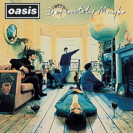
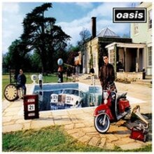
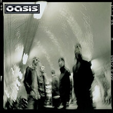

<!--2372036_Muhammad Sava Akbar Bastaman_B-->
<!DOCTYPE html>
<html lang="en">
<head>
    <meta charset="UTF-8">
    <meta name="viewport" content="width=device-width, initial-scale=1.0">
    <title>Oasis</title>
    <link rel="stylesheet" href="styl.css">
    <link rel="stylesheet" href="style3.css">
    <link rel="preconnect" href="https://fonts.googleapis.com">
    <link rel='stylesheet' id='theme-font-awesome-css' href='//use.fontawesome.com/releases/v5.14.0/css/all.css' type='text/css' media='all' />
    <link rel="stylesheet" href="https://cdnjs.cloudflare.com/ajax/libs/font-awesome/4.7.0/css/font-awesome.min.css">
    <link rel="preconnect" href="https://fonts.gstatic.com" crossorigin>
    <link href="https://fonts.googleapis.com/css2?family=Abril+Fatface&family=Amiri:ital@1&family=Girassol&family=Titan+One&display=swap" rel="stylesheet">
    <link href="https://cdn.jsdelivr.net/npm/bootstrap@5.3.2/dist/css/bootstrap.min.css" rel="stylesheet" integrity="sha384-T3c6CoIi6uLrA9TneNEoa7RxnatzjcDSCmG1MXxSR1GAsXEV/Dwwykc2MPK8M2HN" crossorigin="anonymous">
</head>
<aside>
  <header style="background-color: aqua;">
  </header>
  <nav>
      <nav class="navbar navbar-expand-lg bg-secondary">
      <div class="container-fluid">
          
        <a class="navbar-brand" style="color:black" style="font-family: 'Amiri', serif;"> &nbsp;Bastaman</a>
        <button class="navbar-toggler" type="button" data-bs-toggle="collapse" data-bs-target="#navbarSupportedContent" aria-controls="navbarSupportedContent" aria-expanded="false" aria-label="Toggle navigation">
          <span class="navbar-toggler-icon"></span>
        </button>
        <div class="collapse navbar-collapse" id="navbarSupportedContent">
          <ul class="navbar-nav me-auto mb-2 mb-lg-0">
            <li class="nav-item">
              <a class="nav-link active" style="color:red" class="warnafontnav" aria-current="page" href="index.html">Home</a>
            </li>
            <li class="nav-item">
              <a class="nav-link" style="color:white" class="warnafontnav" href="#spotify">Albums and Spotify</a>
          </ul>
        </div>
      </div>
      </nav>
  </nav>
      <!--Navbar-->
      <main>
        <aside>
            <h1>Oasis</h1><br><br>
            <p>
              &nbsp;&nbsp;&nbsp;&nbsp;&nbsp;&nbsp;&nbsp;&nbsp;&nbsp;&nbsp;Oasis were an English rock band that formed in Manchester in 1991. Originally known as The Rain, the group was formed by Liam Gallagher (vocals and tambourine), Paul Arthurs (guitar), Paul McGuigan (bass guitar) and Tony McCarroll (drums, percussion), who were soon joined by Liam’s older brother Noel Gallagher (lead guitar and vocals).<br><br>
              
              &nbsp;&nbsp;&nbsp;&nbsp;&nbsp;&nbsp;&nbsp;&nbsp;&nbsp;&nbsp;Its members were signed to independent record label Creation Records and released their record-setting debut album Definitely Maybe in 1994, including hits like Live Forever and Supersonic.<br><br>
              
              &nbsp;&nbsp;&nbsp;&nbsp;&nbsp;&nbsp;&nbsp;&nbsp;&nbsp;&nbsp;The following year, the band recorded the critically acclaimed (What’s the Story) Morning Glory? with their new drummer Alan White that led to international success propelled by singles Wonderwall, Don’t Look Back in Anger and Champagne Supernova. In 1997, Oasis released third album and became the fastest-selling album in UK chart history, aside Michael Jackson’s Bad. McGuigan and Arthurs left the band as they went on to record and release Standing on the Shoulder of Giants and were replaced by Gem Archer and Andy Bell who joined the group for the recording of Heathen Chemistry.<br><br>
              
              &nbsp;&nbsp;&nbsp;&nbsp;&nbsp;&nbsp;&nbsp;&nbsp;&nbsp;&nbsp;In August 2009, Noel Gallagher announced his departure from the band. Liam Gallagher initially stated that Oasis were “done”, but later in February 2010 announced that the remaining members of the band would continue to record music, and did not rule out the possibility of retaining the Oasis name. However, Liam and other former members of the band are instead continuing under the name Beady Eye and Noel has formed Noel Gallagher’s High Flying Birds.</p>
              <br><br><iframe id="spotify" style="border-radius:12px" src="https://open.spotify.com/embed/artist/2DaxqgrOhkeH0fpeiQq2f4?utm_source=generator" width="100%" height="352" frameBorder="0" allowfullscreen="" allow="autoplay; clipboard-write; encrypted-media; fullscreen; picture-in-picture" loading="lazy"></iframe>
            </aside>
        <article>
            
            <div class="sociallinks">
              <a href="https://www.facebook.com/OasisOfficial/" target="_BLANK"><i class="fab fa-facebook"></i></a>
              <a href="https://twitter.com/oasis?ref_src=twsrc%5Egoogle%7Ctwcamp%5Eserp%7Ctwgr%5Eauthor" target="_BLANK"><i class="fab fa-twitter"></i></a>
              <a href="https://www.instagram.com/oasis/?hl=en" target="_BLANK"><i class="fab fa-instagram"></i></a>
              <a href="https://open.spotify.com/artist/2DaxqgrOhkeH0fpeiQq2f4" target="_BLANK"><i class="fab fa-spotify"></i></a><br><br>
              </div>
              <h2>Popular Albums</h2>
              <div class="row">
                <div class="column">
              
              <figcaption>Definitely Maybe<br>1994</figcaption>
            </div>
            <div class="column">
              
              <figcaption>(What's the Story) Morning Glory?<br>&nbsp;1995</figcaption>
            </div>
            <div class="column">
              
              <figcaption>Be Here Now<br>1997</figcaption>
            </div>
            <div class="column">
              
              <figcaption>Heathen Chemistry<br>2002</figcaption>
              </div>
              </div>
            </article>
    </main>
    <footer id="bgfooter">
      <p>&copy; 2024 My Music Website. All rights reserved.</p>
      <style>
      footer {
          background-image: url(https://cdn.pixabay.com/photo/2012/04/10/16/14/union-jack-26119_1280.png);
          background-repeat: no-repeat;
          margin: 30px;
          justify-content: center;
          position: sticky;   
          background-size: 100%;
          text-align: center;
          }
      </style>
  </footer>
</body>
</html>